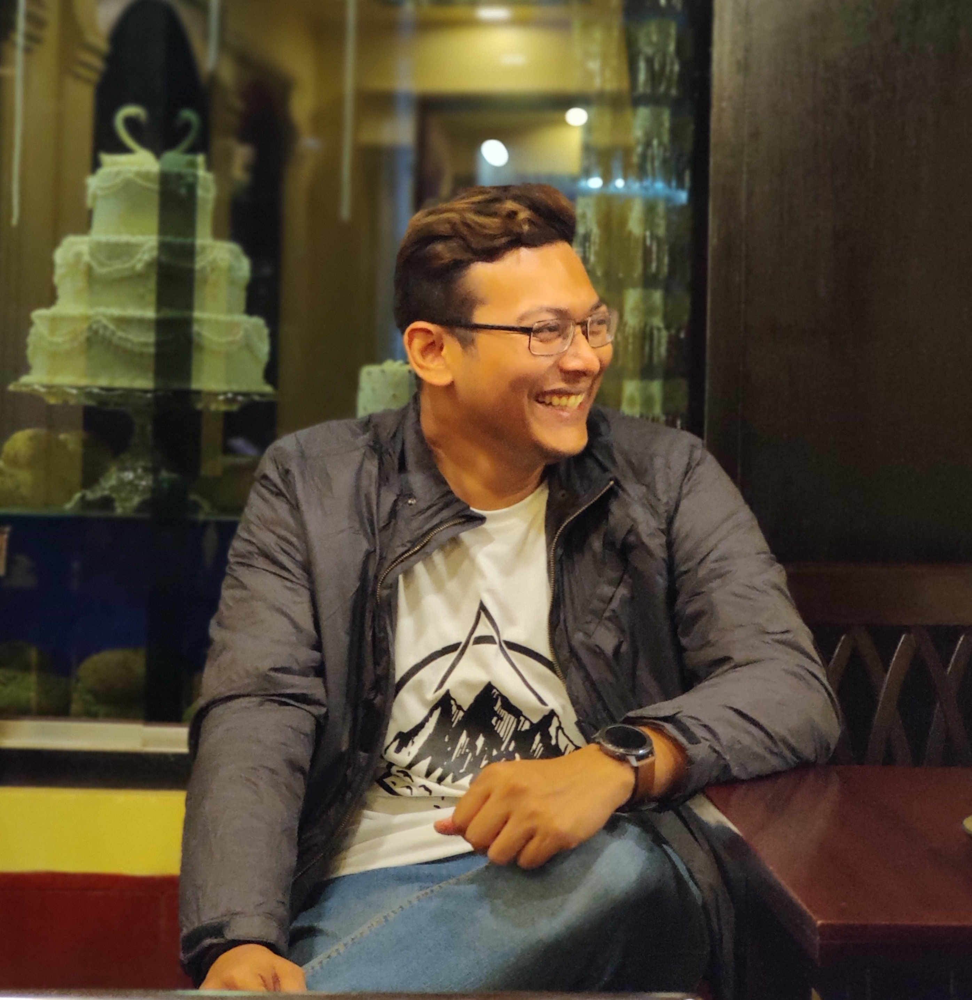

Ishtyaq Akther
🎓 EEE & IT Graduate | 💵 Banker | 👨🏻💻 Web Developer
Summary
I am a hardworking person & always searching for creative works.
Academic Credentials
-
Master's Degree (Masters in Science)
-
Bachelor’s Degree (Bachelor of Science)
- Field of Study : Electrical and Electronic Engineering (EEE)
- University : BRAC University
- Major : Electronics
Work Experience
Skills & Competencies
- Language Skills : Fluent in English, Bengali & Hindi. Also know beginning level of Chinese and
French.
- Interpersonal Skills : Communication skill, teamwork, leadership skill and respecting others
point of view.
- Programming Languages : Java, Assembly language.
- Engineering Analytical Tools : Cisco Packet Tracer, Drjava, Mathematica, Matlab, Proteus,
Emu8086, Microwind.
- Software : MS Office (Word, Excel, Power Point), Photoshop, Illustrator.
Achievements
- Certificates for book reading competition by British Council and Centre for
Languages at BRAC University.
- Received certificate for attending 4th National Undergraduate Mathematics
Olympiad 2012.